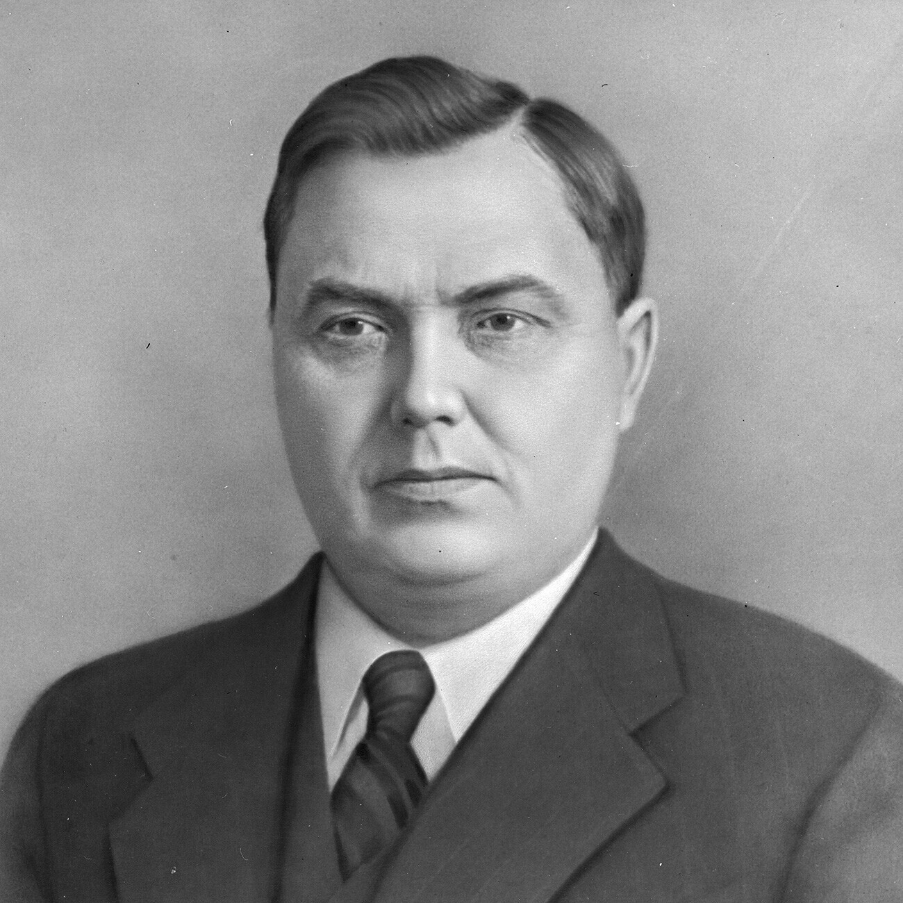
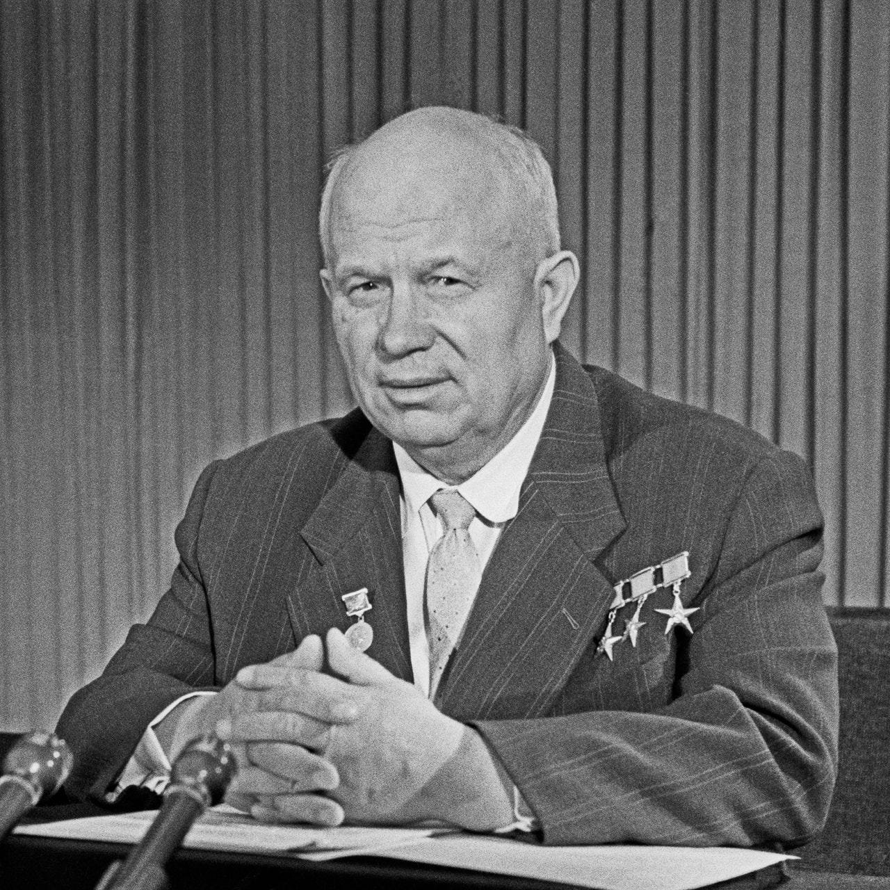
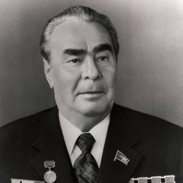
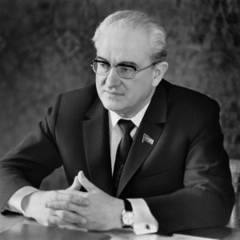
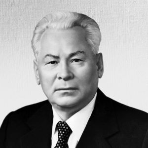
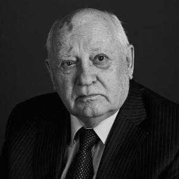

Руководители СССР
Владимир Ленин
1917 - 1924
- Владимир Ильич Ульянов (Ленин) был революционером, основателем и лидером большевистской партии в России.
- Он проявил железную волю, фанатическую веру в движение и себя, а также жестокость в некоторых аспектах.
- Ленин выступал против кормления голодающих и считал голод неизбежным и прогрессивным фактором.
- Он объединил разрозненные марксистские кружки в "Союз борьбы за освобождение рабочего класса".
- В ссылке Ленин написал книгу "Развитие капитализма в России" и написал более 30 работ.
- В ссылке он консультировал местных крестьян по юридическим вопросам и налаживал связи с социал-демократами.
- В 1900-1905 годах Ленин участвовал в создании общероссийской рабочей газеты "Искра" и был опытным конспиратором.
Иосиф Сталин
1924 - 1953
- Иосиф Сталин был революционером и одним из лидеров большевистской партии.
- Он активно участвовал в революционных событиях 1917 года и стал народным комиссаром по делам национальностей.
- Сталин вошел в Совет народных комиссаров и был избран членом Революционного военного совета РСФСР.
- Он получил огромный опыт военно-политического руководства во время Гражданской войны.
- Сталин был близок к "военной оппозиции" и выступал в защиту советизации Грузии.
- В 1922 году он стал Генеральным секретарем ЦК РКП(б) и возглавил аппарат партии.
- Сталин участвовал во внутрипартийной борьбе после XIII съезда РКП(б), на котором Троцкий потерпел поражение.
- Он использовал Н. И. Бухарина и приближенных к нему Рыкова и Томского для борьбы с оппозицией.

Георгий Маленков
1953
- Георгий Маленков был одним из ближайших соратников Иосифа Сталина.
- Маленков и Берия получили большую власть после оттеснения их руководителями нового поколения.
- Расследование "Ленинградского дела" было связано с предложением создать Российскую Коммунистическую партию.
- Маленков стал одним из наиболее доверенных лиц Сталина и произнес Отчётный доклад на XIX съезде ВКП(б) - КПСС.
- После смерти Сталина Маленков стал председателем Совета министров СССР и предложил прекратить политику культа
личности.
- Маленков выдвинул тезис мирного сосуществования двух систем и выступал за развитие легкой и пищевой
промышленности.
- Отставка Маленкова с поста председателя Совета Министров произошла в 1955 году.
- Маленков был отстранен от председательствования на заседаниях Президиума ЦК КПСС и исключен из КПСС в 1961 году.

Никита Хрущёв
1953 - 1964
- Никита Хрущёв был советским государственным и партийным деятелем, занимавшим высокие посты в СССР.
- Он был первым секретарем ЦК КПСС и председателем Совета министров СССР.
- Хрущёв достиг наивысшего доверия со стороны Иосифа Сталина.
- Он инициировал смещение Лаврентия Берии и развенчание культа личности Сталина.
- Хрущёв активно поддерживал и финансировал первые полеты в космос, что привело к победе СССР в космической гонке.
- При Хрущёве началось массовое строительство 4-5-этажных домов, известных как хрущевки.
- Хрущёв был отстранен от власти в 1964 году после критики его ошибок и создания культа своей личности.

Леонид Брежнев
1964 - 1982
- Леонид Брежнев был советским государственным деятелем, занимавшим различные должности в КПСС и правительстве
СССР.
- Он начал свою карьеру в качестве военного политработника и участвовал в Великой Отечественной войне.
- Брежнев был назначен заместителем начальника Главного политического управления Министерства обороны СССР и затем
переведен в Казахскую ССР.
- Он курировал вопросы военно-промышленного комплекса и участвовал в решении вопросов строительства космодрома
Байконур.
- Брежнев занимал пост Председателя Президиума Верховного Совета СССР и был секретарем ЦК КПСС.
- Он участвовал в организации смещения Никиты Хрущева и курировал вопросы космической программы.
- Брежнев имел непростые отношения с западными лидерами, особенно с премьер-министром Италии Альдо Моро.

Юрий Андропов
1982 - 1984
- Юрий Андропов был советским государственным деятелем, занимавшим различные должности в КПСС и МИД СССР.
- Он начал свою карьеру в аппарате ЦК ВКП(б) и курировал работу партийных организаций прибалтийских советских
республик.
- Андропов занимал пост заведующего IV европейским отделом МИД СССР и был послом в Венгрии.
- Он сыграл активную роль в подавлении антикоммунистического восстания в Венгрии и убедил Яноша Кадара возглавить
венгерское правительство.
- Андропов стал архитектором западной политики Брежнева и разработал курс на сближение с Западом.
- Он занимал должность Председателя Комитета государственной безопасности СССР с 1967 по 1982 годы.

Константин Черненко
1984 - 1985
- Черненко стал генеральным секретарем ЦК КПСС после смерти Андропова в 1984 году.
- Черненко проводил работу по подготовке комплексной программы экономических реформ.
- Предлагаемая концепция предполагала отказ от прежнего планового управления экономикой и переход к многоукладной,
рыночной экономике.
- Черненко инициировал укрепление кооперации в рамках Совета Экономической Взаимопомощи на основе равноправной
технологической и сбытовой кооперации.
- Отношения СССР и США оставались крайне напряженными, но были возобновлены переговоры по ядерным и космическим
вооружениям.

Михаил Горбачёв
1985 - 1991
- Михаил Горбачёв - советский и российский государственный и политический деятель, последний генеральный секретарь
ЦК КПСС и первый президент СССР.
- Горбачёв начал свою политическую карьеру в комсомоле и КПСС, занимая различные руководящие должности.
- Он инициировал политику гласности и перестройки, которые привели к изменениям в СССР и его распаду.
- Горбачёв был избран президентом СССР на третьем внеочередном Съезде народных депутатов в 1990 году.
- В период его правления произошли события, связанные с распадом СССР и созданием Содружества Независимых
Государств.
- Горбачёв инициировал различные инициативы и события, которые оказали влияние на политическую и экономическую
жизнь СССР.
- Он признал, что антиалкогольная кампания была ошибкой и ошибкой в том виде, как она проводилась.